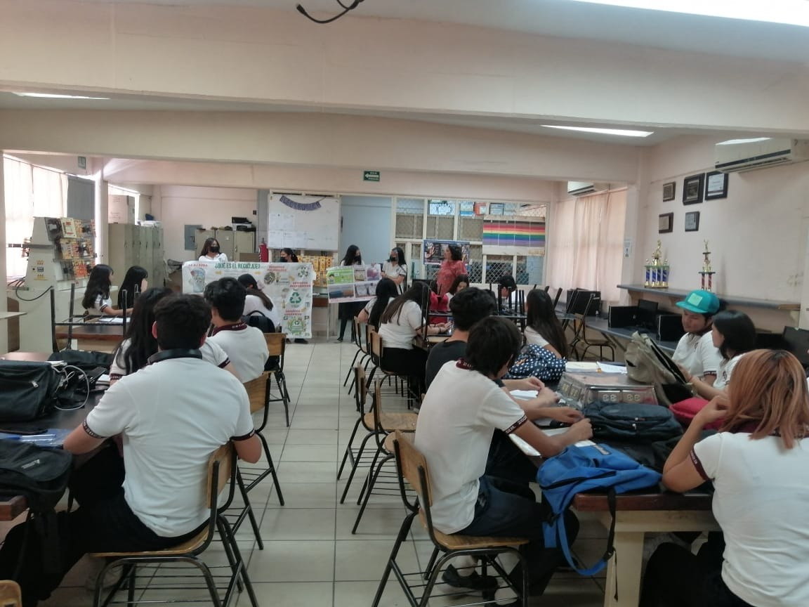

Metas del club
El club a pesar de estar cumpliendo y llevando a cabo varios de sus proyectos, no deja de mirar hacia delante y tiene varias metas en mente.
- Ampliación del Centro de Acopio de Material Reciclable: Una de las metas con las que cuenta el club es tener un centro de acopio menos local, y mas publico. Lo que se quiere es que en algun momento pueda recibir material reciclable, no solo de parte de alumnos y miembros del club, si no tambien de otras personas, asi promoviendo una cultura reciclable mas amplia y accesible
- Visitas Escolares y Concientización Ambiental: El club se propuso realizar por lo menos 15 visitas escolares a otras comunidades escolares al año, llevando su conferencia de "Nuevos pulmones para mi ciudad" a otros planteles. Esta meta tiene como objetivo que mas personas sean concientes de la importancia de la forestacion en el estado, y a su vez motivarlos a plantar arboles.
- Automatización y Ampliación de Zonas de Riego por Goteo: Se continuara ampliando e iniciaran con la automatizacion del riego por goteo dentro del plantel. Para de esta forma mejorar la eficiencia en el uso del agua para el cuidado de las zonas verdes con las que cuenta el plantel y promover un uso eficiente del agua.
- Instalación de Enfriadores de Agua purificada: Se tiene planeado colocar enfriadores de agua purificada, destinadas al llenado de botellas reutilizables, con el objetivo de reducir el consumo de botellas de plastico desechables dentro del plantel y aso fomentar el uso responsable de envases reutilizables.
- Instalación de Contenedores para Tapitas en Jardìn de Niños: Se instalara dos contenedores, que sean atractivos para el acoplo de tapitas en jardines de niños de nuestra comunidad escolar. Incentivando la recoleccion de tapitas, y a su vez se fomentara la importancia que tiene el reciclaje en la vida cotidiana
- Transformación de Mentalidades para Crear Cambio: El club se compromete a continuar inspirando y transformando las mentalidades de nuestra comunidad escolar, fomentando asi una mayor conciencia ambiental y un compromiso colectivo hacia un futuro mejor y mas sostenible donde no exista tanta contaminacion como la que existe hoy en dia.